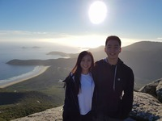

About me

read more ...
| Have you any programming or web design experience? | I have one semester of programming and web design experience |
|---|---|
| Do you see yourself as a programmer or designer, or both? | I want to see myself as both a programmer and a designer |
| What has brought you to this course at RMIT? | I am studying this course at RMIT because I am interested in technology and because RMIT is a well respected university. |
| What are you hoping to get out of the course? | I am hoping to attain the skills to become a skilled web developer |
| Assignments allow for individual or paried work. What strengths do you have and what strengths would you like your assignment partner to have? | I would like my partner to be creative, good at communicating and punctual. |
| What websites do you use the most? (NB: "family friendly" !) | The websites that I use the most are: Youtube, Facebook, Reddit, LoFi.HipHop and soundcloud |
| Do you have any interests or hobbies? | My interests and hobbies include:
|